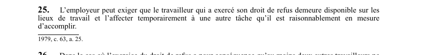

art-25-LSST : affectation temporaire travailleur refus
Un article du wiki ⚖️ Recueil législatif
🌐 LegisQuébec · 📄 PDF officiel (page 10)
Texte officiel : capture du PDF

🔗 Ouvrir a cette page : LSST.pdf : page 10 · texte a jour au 26 mars 2024
En bref
L'employeur peut exiger que le travailleur qui a exercé son droit de refus demeure disponible sur les lieux de travail. Cette obligation vise l'employeur et le travailleur.
- Tâche raisonnablement en mesure d'être accomplie.
Voir aussi
- art. 23 : disposition remplacée · disposition remplacée.
- art. 24 : application de la décision finale · champ d'application : une décision finale s'applique tant que les circonstances ne sont pas changées.
- art. 26 : refus travail délai inspecteur · obligation : lorsque l'exercice du droit de refus entraîne l'impossibilité de travailler pour au moins deux autres travailleurs, l'inspecteur doit être présent sur les lieux au plus six heures après que son intervention a été requise ; à défaut.
- art. 27 : refus collectif, décision commune · faculté : lorsque plusieurs travailleurs refusent d'exécuter un travail en raison d'un même danger, leurs cas peuvent être examinés ensemble et faire l'objet d'une décision qui les vise tous.
- ↑ Loi : LSST
Pages qui pointent ici (8)
- art-23-LSST, remplacé c a c Recueil législatif
- art-24-LSST, décision finale s applique Recueil législatif
- art-26-LSST, inspecteur Recueil législatif
- art-27-LSST, lorsque plusieurs travailleurs refusent Recueil législatif
- Exercice du droit de refus Recueil législatif
- LSST - Chapitre II - Droits et obligations Recueil législatif
- LSST - Chapitre III - Droit de refus et retrait préventif Recueil législatif
- LSST, droits et obligations Droit du travail